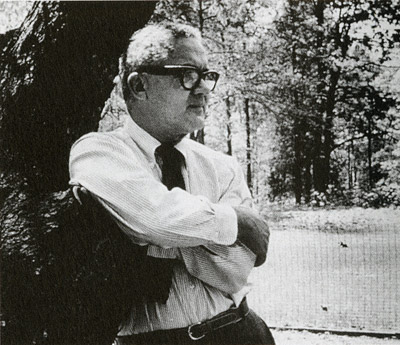

Paul Rand:

Paul Rand
The ABC logo was designed by Paul Rand in 1962. Paul Rand has 4 principles for
designing a logo:
- “A logo derives meaning from the quality of the thing it symbolizes, not
the other way around.”
- “The only mandate in logo design is that they be distinctive, memorable
and clear.”
- “Presentation is key”
- "Simplicity is not the goal. It is the by-product of a good idea and modest
expectations.”